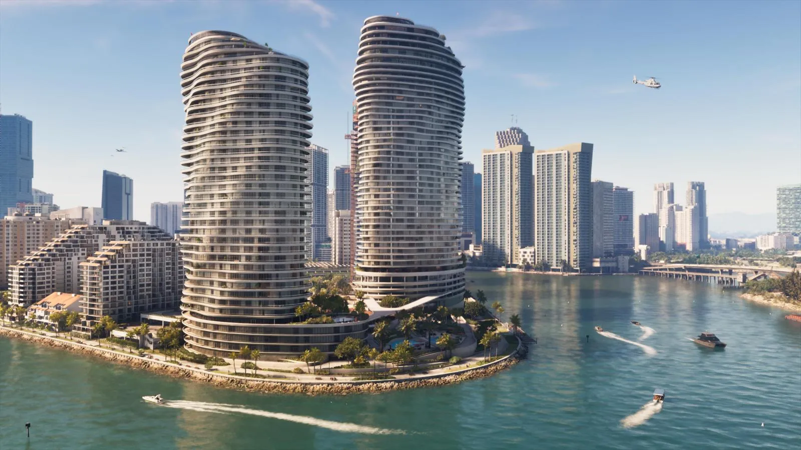
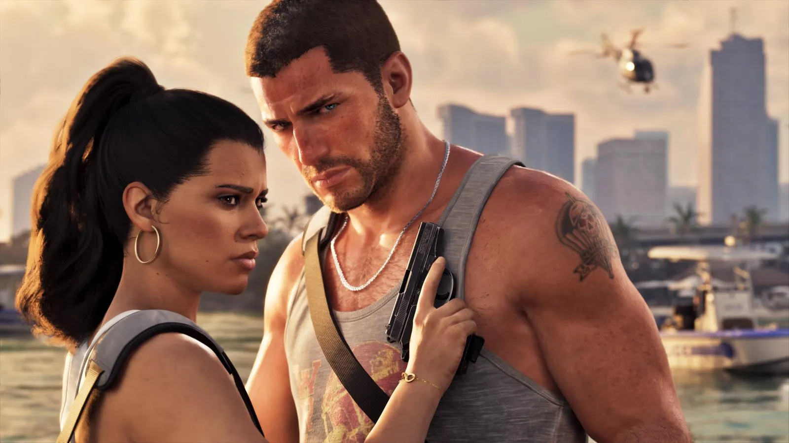
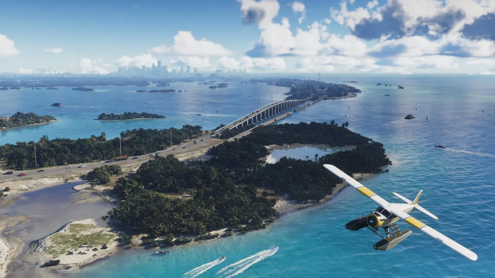

Журнал Edge №430: что Rockstar рассказала о GTA 6 за три недели до выхода
Опубликовано:

- 29 октября 2026 вышел Edge №430 с 16-страничным материалом о GTA 6: журналисты побывали в Rockstar North в Эдинбурге.
- Суша Леониды — почти как карты GTA 4, GTA 5 и RDR 2, вместе взятые.
- Новое: шкала отношений героев, криминальный профиль, розыск по приметам, заказы скупщиков в приложении WAINK.
Что за материал
Британский журнал Edge посвятил GTA 6 обложку номера 430. Журналисты съездили в Эдинбург, в Rockstar North — там работает около 900 человек и сделана большая часть игры, — поговорили с руководителями студии и посмотрели игру. Номер вышел 29 октября 2026, в тот же день полный текст бесплатно опубликовали на GamesRadar+. Ниже — главное. Скриншоты из журнала мы не перепечатываем: иллюстрации на этой странице — официальные кадры Rockstar, вышедшие раньше.
Карта и мир
- Карта Леониды примерно вдвое больше карты GTA 5. По словам Rockstar, вся суша вместе с Вайс-Сити — почти как игровые карты GTA 4, GTA 5 и Red Dead Redemption 2, вместе взятые.
- Интерьеров «на порядок больше», чем в прошлых играх, — Аарон Гарбут, соруководитель Rockstar North. По его словам, он и после многих лет работы находит на карте места, где не бывал.
- Широкие дороги и шоссе GTA 5 сузили ради «более правдоподобного размера» (Роб Нельсон).
- Цикл дня и ночи сильно удлинили: закаты и ночи длиннее.
- У прохожих в сумме около 600 000 анимаций. У каждого свои черты: темперамент, агрессивность, где он находится, что видел и как с ним обошёлся игрок. Над прохожими работала отдельная команда сценаристов, режиссёров и продюсеров в Лос-Анджелесе.
- Районы различаются по жителям и профессиям. Квартиры выглядят обжитыми: фото, вещи, беспорядок.
- Из одной сцены выросла система брезгливости: места могут вызывать у героя разное отвращение. Гарбут вспоминал дом, от состояния которого Джейсон отшатнулся.
- Часто случаются полу-заскриптованные встречи — например, уличная гонка с внедорожником в фиолетовой подсветке или собака, которая гонится за игроком, если он угрожал её хозяину.
- По всей Леониде полностью работают автобусы и поезда.

Джейсон и Лусия
Джейсон Дюваль и Лусия Каминос — напарники по преступлениям, живут в одной квартире и, в зависимости от игрока, могут быть влюблены. Переключаться между ними можно, когда это позволяет сюжет.
- Близость героев отслеживается по шкале из четырёх уровней. Её повышают совместные дела: прогулки по пляжу, велосипед, спортзал (после покупки абонемента), поездки вдвоём.
- Отношения можно развивать, но совсем разойтись герои не могут. Можно ли им пожениться, Нельсон подтверждать не стал.
- Криминальный профиль оценивает поведение от «Профессионала» (Professional) до «Неисправимого» (Irredeemable) — с иконками ангела и дьявола. Нелетальные методы — запугивание, обезвреживание — тоже учитываются. По словам Rockstar, профиль влияет на то, как развивается история.
- Одна из главных тем сюжета — желание завязать с преступностью. Нельсон говорит, что мотивы героев сложнее, чем в прошлых GTA.

Полиция и розыск
- Полиция собирает приметы: внешность, был ли герой один или с напарником, одежду, попал ли он на камеры, какое оружие. Это показывают иконки вверху экрана.
- Приметы можно сбросить: разделиться с напарником, переодеться, выбросить оружие.
- Дробовик в руках заметнее, чем дробовик за спиной. Важны свидетели, и до объявления розыска есть небольшая фора.
- При угоне водитель может убежать, дать отпор или оказаться вооружён. На дорогих машинах бывают трекеры, а владельцы заявляют об угоне.
- У полиции есть шипы на дорогах и кинологи с собаками для погони пешком.
- У каждой машины — указатель топлива и состояние двигателя.
- Через приложение Scooter Bros свою машину можно вызвать с доставкой; оружие хранится в багажнике.
- В погоне руль можно отдать напарнику под управлением ИИ и стрелять вторым героем.
Деньги и скупщики
- Деньги зарабатывают ограблениями заправок и ювелирных магазинов или угоном машин, которые ищут скупщики.
- Приложение WAINK показывает, какие модели нужны скупщикам, с данными о защите и слежении. Машины с серьёзной защитой угнать сложнее.
- Часть оплаты зависит от состояния машины при сдаче. У скупщиков обычно стоят глушилки, поэтому трекер угнанной машины не выдаёт место.
- В сюжете есть паузы, когда нужно накопить денег, — это даёт передышку между миссиями.
Погода
- Облака движутся сами по себе и зависят от ветра, влажности, тумана, времени суток и сезона.
- Шторм видно издалека. Дороги намокают, со зданий капает, после дождя поверхности сохнут с разной скоростью.
- Ветер качает деревья, облака и волны; острова и здания закрывают воду от ветра, и лодку на ней ведёт по-разному.
- Самолёты и вертолёты болтает в шторм, сильная непогода может их слегка повредить. Прохожие прячутся, когда погода портится.

Как делали игру
- В 2015 году Нельсон с небольшой группой съездил в Майами — проверить, стоит ли возвращаться в Вайс-Сити. Флориду выбрали быстро.
- Работа идёт этапами по 6–8 недель, после каждого — интенсивная игра. Президент Rockstar Сэм Хаузер вместе с Нельсоном около двух недель оценивает каждый этап.
- Студия в Торонто ведёт наполнение мира людьми и исследования, студия в Сан-Диего — случайные и интерактивные события.
- Сатиру пишут отдельные команды: бренды и билборды, реклама на радио, ТВ-шоу, реплики прохожих, миссии. Пример из материала: городок может быть патриотичным, с байкерской бандой за полицию и выборами мэра — и это расходится по рекламе, разговорам и вещам в домах.
- По словам Нельсона, при нынешней детализации всё в темпе GTA 5 казалось слишком быстрым — прохожие и тайминги пришлось сделать правдоподобнее.
Цитаты
«Каждый задний переулок так же плотно проработан и интересен, как остальные».
Аарон Гарбут, соруководитель Rockstar North
«Такое чувство, что мы построили пирамиду на Эвересте».
Аарон Гарбут
«Но по ходу игры это твоё — сохранить или потерять».
Роб Нельсон, соруководитель Rockstar North
«Мы сделали то, что хотели сделать».
Фил Хукер, Rockstar North
Все механики из этого материала и из интервью Нельсона для IGN собраны на странице Новые механики GTA 6: что изменилось.
Источники: Edge №430 — обложечный материал «Grand Theft Auto VI exclusive» (29.10.2026, опубликован на GamesRadar+: gamesradar.com/edge/gtavi-cover/); PC Gamer, 27.10.2026 (анонс номера); GamesRadar+, 30.10.2026 (размер карты).
Каждый день — одно сравнение: кадр игры рядом с реальным фото. Подписывайтесь:
YouTubeInstagramTikTok